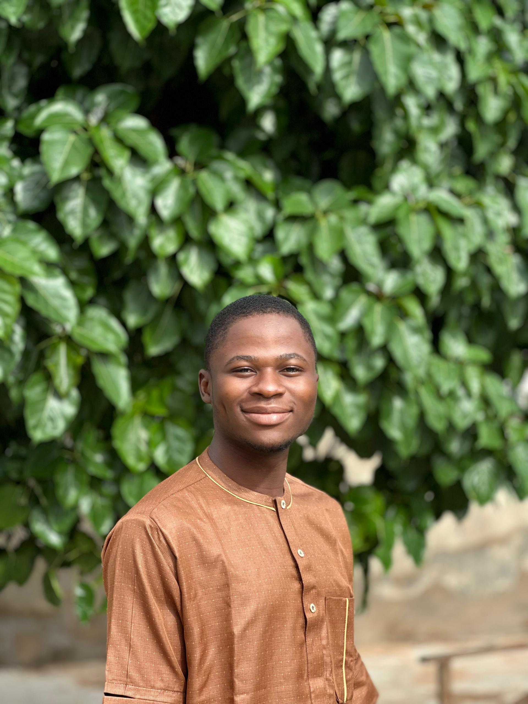

Abdulsalam Abdulsomad .A.
About Me
My name is Abdulsalam Abdulsomad. I was born in Lagos and currrently live in Ilorin. I am a student. I love horseback riding and reading about topics of interest.
Nigeria - Giant of Africa

Nigeria is a diverse federal republic in West Africa, located on the Gulf of Guinea and bordering Benin, Niger, Chad, and Cameroon. It is Africa's most populous country and a global hub for culture, technology, and media, boasting rich natural resources like oil and gas. Its capital is Abuja, and its largest city and commercial center is Lagos.